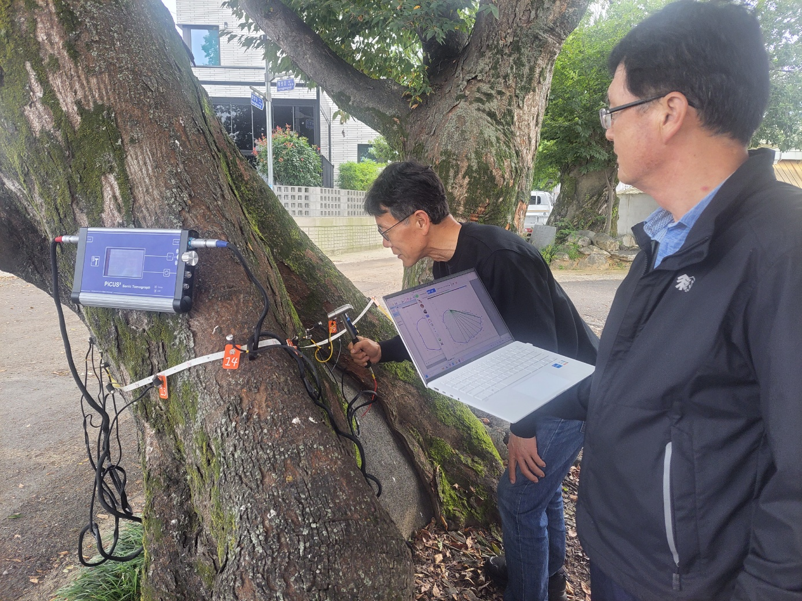
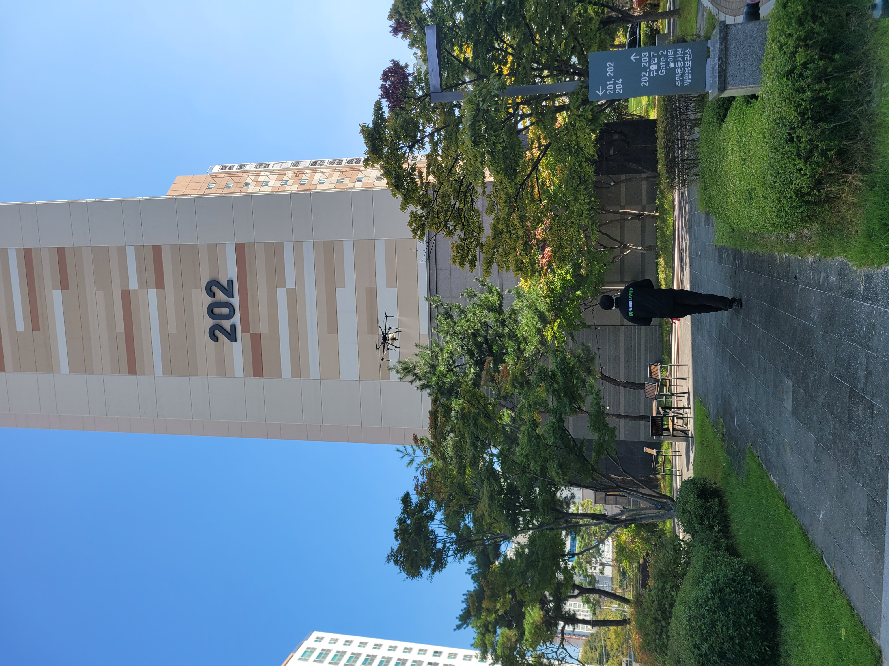
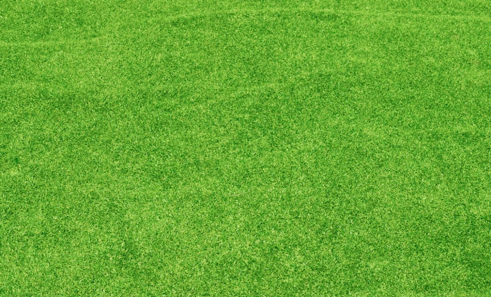
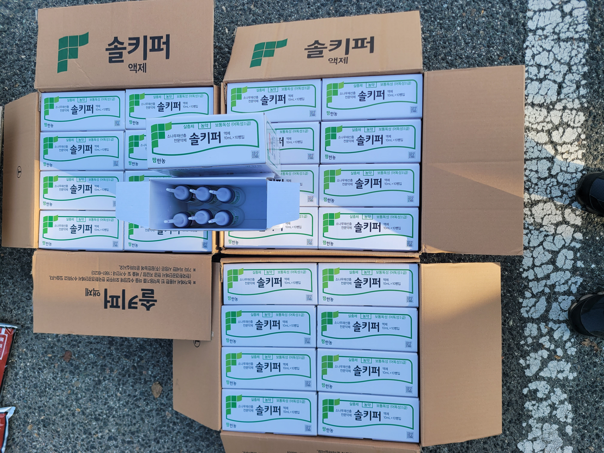
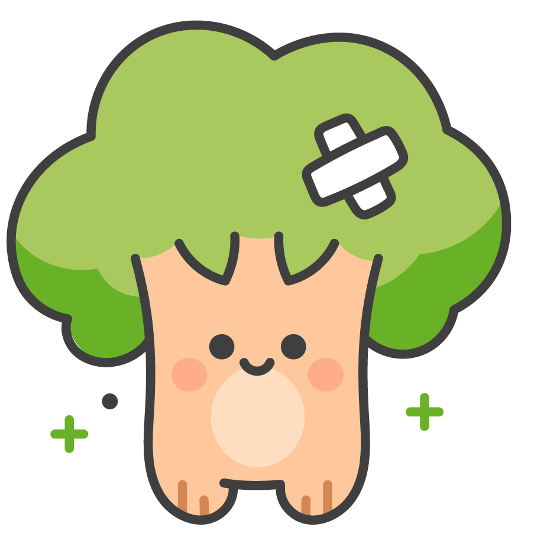

치료 사례 갤러리







우리의 나무가 아플 때에는
(주)사계절나무병원을 찾아주세요
우리의 나무가 아플 때에는
(주)사계절나무병원을 찾아주세요
(주)사계절나무병원은
나무의사와 수목치료기술자가
생활권 수목을 진단하고 치료합니다.
아파트 · 학교 · 회사 · 공공시설 등
생활권 수목에서 발생하는 각종 병해충의
정확한 진단과 방제는 물론
보호수의 정비 · 외과수술 · 수세회복 등
수목의 건강을 지속적으로 관리하는
나무전문병원입니다.
대표자 : 송재홍



